6 – 31 luglio 2009
La nona campagna di scavo del Dipartimento di Archeologia dell'Università degli Studi di Bologna, come sempre diretta da Giuseppe Lepore e coordinata sul campo dal dott. Tommaso Casci Ceccacci, si è svolta su più settori, affidati ognuno ad un responsabile:
- l'area H, che comprende la navata nord della chiesa (dott.ssa Elisa Cipriani)
- la cd. "area Vicus": si tratta del podere Latini, entro cui è stato effettuato un sondaggio stratigrafico (dott. Fabio Visani)
- il Laboratorio materiali, attivato contestualmente allo scavo e diretto dalla dott.ssa Anna Gamberini e condotto dalla dott.ssa Gilda Assenti.
Ancor prima di dare inizio alle operazioni di scavo il Comune di Corinaldo aveva provveduto, grazie alla prontezza dell’Ufficio Tecnico, ad allestire una copertura provvisoria dell'area di scavo intorno alla chiesa. Al termine dei lavori l'area è stata messa in sicurezza, mentre si è dato inizio ai lavori di restauro e di sistemazione di tutte le strutture (dott. Mirco Zaccaria), grazie al "consueto" contributo della Soprintendenza per i Beni Archeologici delle Marche.
AREA H : la prosecuzione dello scavo della navata nord ha restituito finalmente dati più sicuri sulle dimensioni della chiesa più antica attestata nel sito di S. Maria in Portuno. Allo stato attuale possiamo affermare che l'edificio originario, (inquadrabile, per ora genericamente, all'età altomedievale), avesse una forma piuttosto semplice, molto probabilmente motonave, e che potesse terminare a est con un’abside semicircolare sia all'interno sia all'esterno. A questo edificio iniziale possono essere riferiti i numerosi frammenti di decorazione architettonica in pietra (tra cui alcuni frammenti di transenna per finestra), rinvenuti nel corso dello scavo, purtroppo non in collocazione primaria.
La successiva chiesa romanica sfrutta il precedente edificio (che diventa parte della cripta) e lo amplia in tutte le dimensioni, trasformandolo in una grande chiesa a tre navate, con il "nuovo" abside poligonale all'esterno e semicircolare all'interno già visto durante le indagini 2008. Al di fuori dell’absidiola, verso est, inizia a venire in luce un’area scoperta occupata da una necropoli.
AREA “VICUS”: con questo termine convenzionale veniamo ad indicare tutte le indagini che si svolgono all’esterno della chiesa nel tentativo di contestualizzare il sito originario. Quest’anno grazie alla cortesia del proprietario, sono stati svolti diversi sondaggi stratigrafici all’interno del podere Latini (a poca distanza dalla 2 fornaci rinvenute nel 2008). Le indagini 2009 hanno confermato che siamo di fronte ad una vasta area industriale, dedicata, con tutta probabilità, alla produzione e alla cottura di laterizi. Numerosi sono gli indizi: innanzitutto il rinvenimento (e lo scavo) di un'ampia cavità, riempita con numerosissimi laterizi e tegole malcotte, interpretabile come area di cava di argilla. I materiali rinvenuti coprono una cronologia che va dal I al V sec. d.C.
In un settore più vicino alla strada attuale sono poi state rinvenute altre 2 piccole fornaci, inserite però in un contesto strutturale (alcune murature che si incrociano ad angolo retto), che ci testimoniano una diversificazione delle attività produttive svolte in quest’area.
Inoltre il rinvenimento di alcuni particolari bolli laterizi anepigrafi permette di aprire nuovi orizzonti di ricerca (soprattutto in collegamento con le altre grandi fornaci rinvenute al di sotto della chiesa mdi Madonna del piano e nel resto della valle del Cesano.
IL LABORATORIO MATERIALI: le attività di laboratorio della campagna di scavo 2009 hanno visto una riorganizzazione delle modalità di gestione dei reperti provenienti dagli scavi condotti in località Madonna del Piano. Si è pertanto deciso di uniformare il sistema di schedatura dei reperti con quello in uso presso lo scavo di Suasa, al fine di ottenere una documentazione omogenea e permettere una facile interazione fra queste due zone d’indagine nella Valle del Cesano, entrambe oggetto di ricerche da parte del Dipartimento di Archeologia dell’Università di Bologna. Il lavoro di laboratorio (lavaggio, siglatura e schedatura dei reperti mobili) del nuovo sistema congiunto Suasa-Corinaldo è coordinato dalla Dott. ssa Anna Gamberini, con la collaborazione della dott.ssa Gilda Assenti, che si è occupata, in particolare, della gestione pratica delle attività di catalogazione del materiale proveniente dagli scavi condotti presso Madonna del Piano. Le attività di laboratorio hanno interessato, nella prima fase, il riordino, l’inventariazione e la schedatura di alcuni reperti della campagna 2008, in particolare quelli provenienti dall’area delle Fornaci (area 10). In seguito si è proceduto al lavaggio, all’inventariazione e alla schedatura dei reperti venuti in luce durante lo scavo 2009 dai due settori indagati, ovvero l’Area H e le aree 7, 8 e 9, presso Podere Latini. I dati sono stati inseriti in un database realizzato con FileMaker, che prevede una scheda per ogni singolo reperto. A questa catalogazione di dettaglio è stata affiancata una scheda riassuntiva, creata col medesimo programma, che prevede dei campi per i dati principali dei reperti presenti in ogni singola unità stratigrafica (quantità e tipologia), che vengono compilati dai responsabili del laboratorio, e delle voci per i dati relativi all’US (si tratta dei campi più utilizzati della tradizionale scheda di US Ministeriale), compilate dai responsabili dei settori di scavo. Lo scopo di questo strumento è di favorire l’interazione e il confronto fra chi conduce le operazioni sul campo e chi studia i reperti, fornendo già in fase di scavo delle prime notizie sul materiale presente nelle US e un’interpretazione cronologica, così da favorire la comprensione della sequenza stratigrafica e l’adozione di strategie d’indagine adeguate.
Partecipanti
- Giuseppe Lepore
- Tommaso Casci Ceccacci
- Elisa Cipriani
- Fabio Visani
- Cordoni Cristina
- Franco Costa
- Silvia Di Cristina
- Valentina Lucchini
- Marina Marcosignori
- Ada Nifosì
- Angelo Prestipino
- Emanuela Razza
- Ilaria Rossetti
- MariaTeresa Sacchetta
- Simone Schmid Zanchi
- Donatella Vinci
- Maria Letizia Carra
- Mirco Zaccaria
- 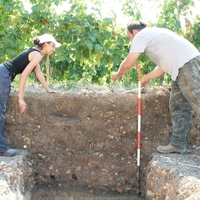Campagna di scavi 2009
- 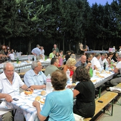Campagna di scavi 2009
- 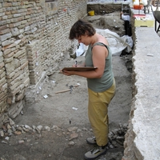Campagna di scavi 2009
- 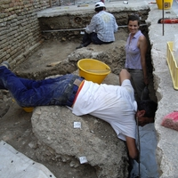Campagna di scavi 2009
- 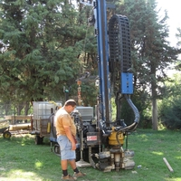Campagna di scavi 2009
- 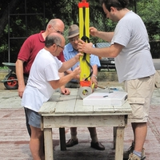Campagna di scavi 2009
- 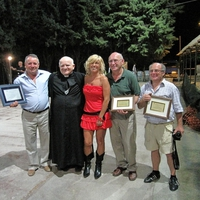Campagna di scavi 2009
- 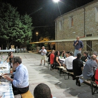Campagna di scavi 2009
- 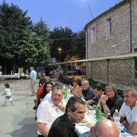Campagna di scavi 2009
- 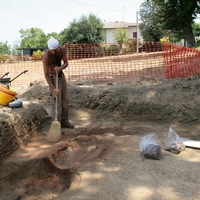Campagna di scavi 2009
- 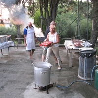Campagna di scavi 2009
- 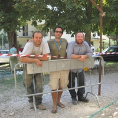Campagna di scavi 2009
 Campagna di scavi 2009
Campagna di scavi 2009- 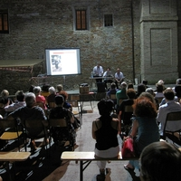Campagna di scavi 2009
 Campagna di scavi 2009
Campagna di scavi 2009- 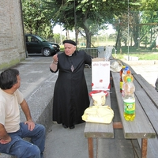Campagna di scavi 2009
- 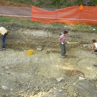Campagna di scavi 2009


{kind=link}
{kind=link}
{kind=link}
{kind=link}
{kind=link}
{kind=link}
{kind=link}
{kind=link}
{kind=link}
{kind=link}
{kind=link}
{kind=link}
{kind=link}
{kind=link}
{kind=link}